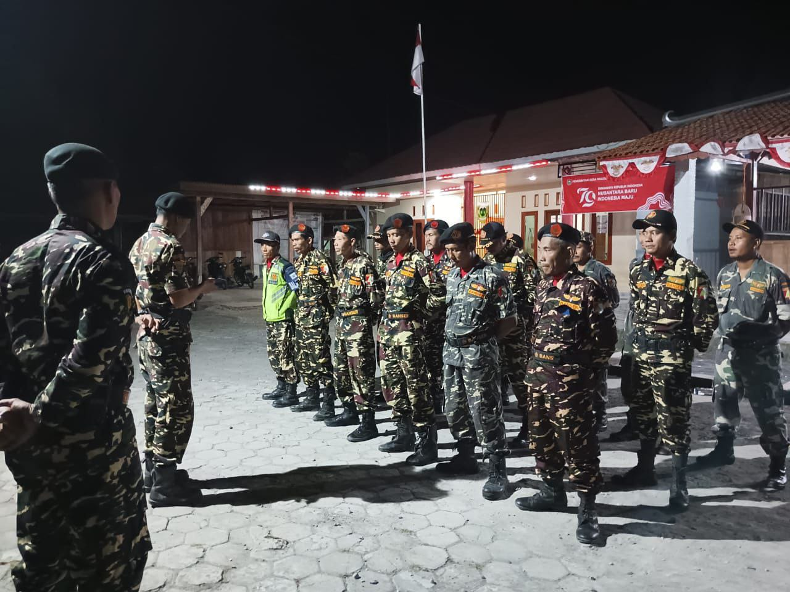
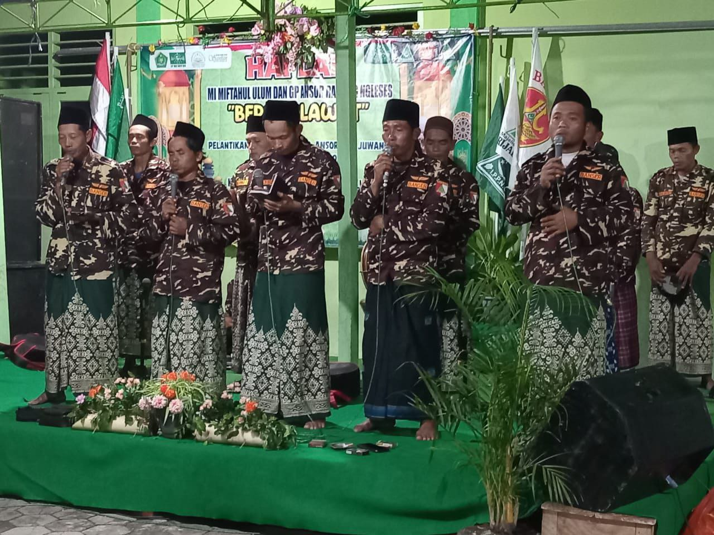
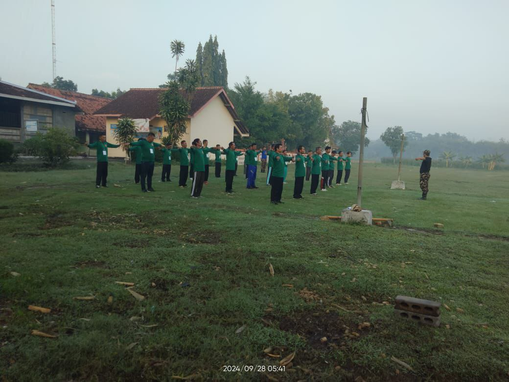
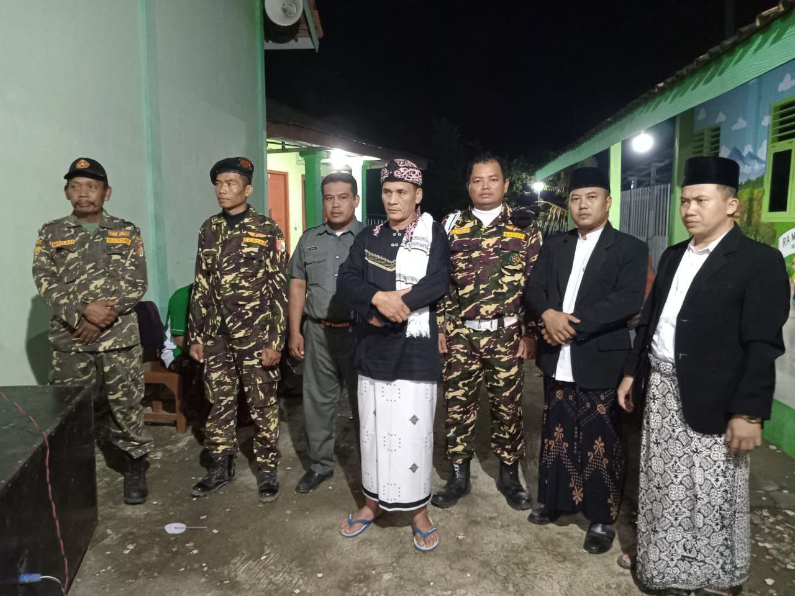

Banser
Banser (singkatan dari Barisan Ansor Serbaguna) adalah salah satu badan semi-otonom di bawah Gerakan Pemuda Ansor (GP Ansor), organisasi pemuda Nahdlatul Ulama (NU). Banser berperan sebagai unit pengamanan, pertahanan, dan pelayanan masyarakat, terutama dalam mendukung program-program keagamaan, sosial, dan kebangsaan.
Tugas Dan Fungsi Banser
- Pengamanan Acara: mengamankan kegiatan keagamaan seperti pengajian, peringatan hari besar Islam, dan acara-acara NU. menjaga keamanan dalam kegiatan nasional seperti peringatan hari kemerdekaan atau acara kebudayaan.
- Peningkatan Toleransi dan Kebhinekaan: aktif dalam menjaga kerukunan antarumat beragama. melindungi kelompok minoritas yang menghadapi ancaman atau intoleransi.
- Kemanusiaan dan Penanggulangan Bencana: bantuan untuk korban bencana alam, bakti sosial, dan aksi kemanusiaan lainnya.
Kelembagaan Banser ini didirikan pada tahun 2015 dan terus berkembang hingga saat ini. Banser desa ini terdiri dari 54 anggota yang berdedikasi tinggi untuk melayani masyarakat dengan semangat keikhlasan dan solidaritas. Mereka aktif dalam berbagai kegiatan sosial, kemasyarakatan, dan keagamaan, seperti membantu dalam acara-acara desa, mendukung penanganan bencana, serta menjaga tradisi dan budaya lokal.
Ansor
Ansor adalah salah satu organisasi kepemudaan Islam di Indonesia yang berada di bawah naungan Nahdlatul Ulama (NU), organisasi Islam terbesar di Indonesia. Secara resmi dikenal sebagai Gerakan Pemuda Ansor, organisasi ini didirikan pada 24 April 1934 di Surabaya. Ansor bertujuan untuk menghimpun generasi muda NU agar terlibat aktif dalam kegiatan keagamaan, sosial, pendidikan, dan kebangsaan.
Tugas Dan Fungsi Ansor
- Pengembangan Keislaman: Membina generasi muda untuk mengamalkan nilai-nilai Islam Ahlussunnah wal Jamaah.
- Kaderisasi: Menjadi wadah pembentukan kader pemimpin yang berlandaskan semangat keagamaan dan kebangsaan.
- Keberpihakan Sosial: Berkontribusi pada isu-isu sosial, seperti pemberdayaan masyarakat, pendidikan, dan kemanusiaan.
- Patriotisme: Menjaga keutuhan Negara Kesatuan Republik Indonesia (NKRI) dengan semangat nasionalisme.
Kelembagaan ini resmi didirikan pada tahun 2015 sebagai wujud kepedulian terhadap pengembangan potensi pemuda desa. Ansor desa ini memiliki 18 anggota yang aktif dalam berbagai kegiatan sosial dan keagamaan. Mereka berperan sebagai motor penggerak dalam membangun kesadaran masyarakat, terutama di kalangan generasi muda, untuk terus berkontribusi dalam menjaga harmoni dan keberlanjutan pembangunan desa.
Bagana
Bagana adalah singkatan dari Barisan Ansor Tanggap Bencana, sebuah unit khusus di bawah Gerakan Pemuda Ansor (GP Ansor) yang berfokus pada penanganan bencana alam dan kemanusiaan. Bagana bertugas untuk merespons situasi darurat, memberikan bantuan, dan mendukung pemulihan di daerah yang terdampak bencana.
Tugas Dan Fungsi Bagana
- Penanggulangan Bencana: Membantu evakuasi korban bencana alam seperti banjir, gempa bumi, longsor, atau kebakaran. Menyediakan bantuan pertama di lokasi bencana, termasuk layanan medis darurat.
- Distribusi Bantuan: Menyalurkan logistik seperti makanan, obat-obatan, pakaian, dan kebutuhan lainnya kepada korban bencana. Bekerja sama dengan lembaga pemerintah dan organisasi lainnya dalam penyaluran bantuan.
- Pendidikan dan Mitigasi Bencana: Melakukan edukasi kepada masyarakat tentang kesiapsiagaan menghadapi bencana. Memberikan pelatihan mitigasi bencana untuk mengurangi dampak bencana di masa depan.
- Pemiluhan Pasca Bencana: Mendukung proses rehabilitasi dan rekonstruksi di wilayah terdampak. Memberikan dukungan psikososial kepada korban bencana.
Didirikan pada tahun 2015, Bagana hadir sebagai garda terdepan dalam memberikan bantuan tanggap darurat dan meningkatkan kesadaran masyarakat terhadap mitigasi bencana. Kelembagaan Bagana desa kami beranggotakan 5 orang yang memiliki dedikasi tinggi dalam membantu masyarakat, terutama saat terjadi bencana alam maupun situasi darurat lainnya. Meskipun kecil dalam jumlah, Bagana memainkan peran penting dalam menjaga keselamatan dan ketangguhan masyarakat desa, menjadikan desa kami lebih siap dan tangguh dalam menghadapi tantangan.
Balantas
Balantas adalah singkatan dari Barisan Lalu Lintas Ansor, sebuah unit khusus di bawah Gerakan Pemuda Ansor (GP Ansor) yang berfokus pada pengelolaan dan pengaturan lalu lintas. Balantas memiliki peran utama membantu kelancaran dan keselamatan berlalu lintas, baik dalam kegiatan keagamaan, sosial, maupun kebangsaan yang melibatkan massa besar.
Tugas Dan Fungsi Balantas
- Pengaturan Lalu Lintas: Membantu mengatur lalu lintas di sekitar acara-acara besar yang diselenggarakan oleh NU, GP Ansor, atau komunitas masyarakat setempat. MMenjamin kelancaran transportasi selama kegiatan berlangsung.
- Edukasi Keselamatan Lalu Lintas: Memberikan sosialisasi dan edukasi kepada masyarakat tentang pentingnya keselamatan berlalu lintas. Mengkampanyekan budaya tertib berlalu lintas di komunitas lokal.
- Bantuan di Jalan Raya: Membantu masyarakat yang mengalami kesulitan di jalan raya, seperti kendaraan mogok atau kecelakaan. Berkolaborasi dengan pihak kepolisian dan dinas terkait untuk menjaga keamanan jalan.
- Pelayanan Publik: Mengawal rombongan atau kegiatan tertentu yang memerlukan pengawalan lalu lintas. Mendukung kegiatan kemanusiaan yang memerlukan pengaturan mobilitas.
Didirikan pada tahun 2015, Balantas hadir dengan semangat kolaborasi untuk menciptakan hubungan yang harmonis antarwarga dan desa sekitar. kelembagaan Balantas desa kami beranggotakan 5 orang yang berdedikasi tinggi dalam menjalankan berbagai program dan kegiatan. Meskipun kecil dalam jumlah, semangat dan kontribusi mereka sangat besar dalam mendukung berbagai inisiatif sosial, pembangunan, serta menjaga nilai-nilai kebersamaan di desa.